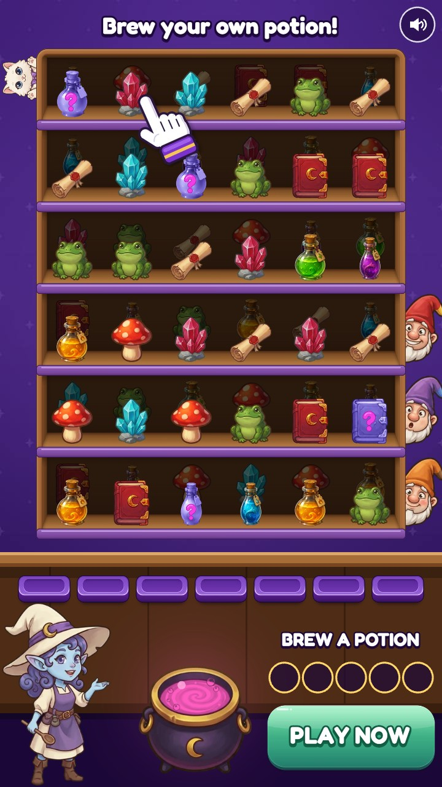
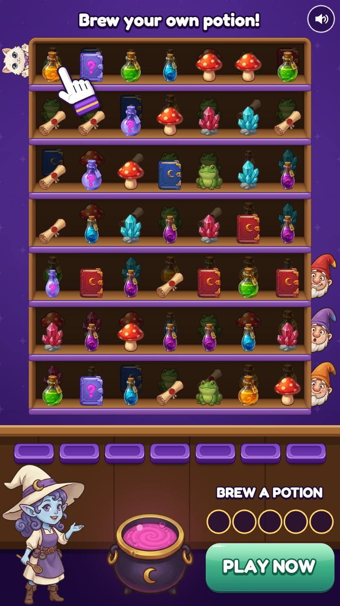
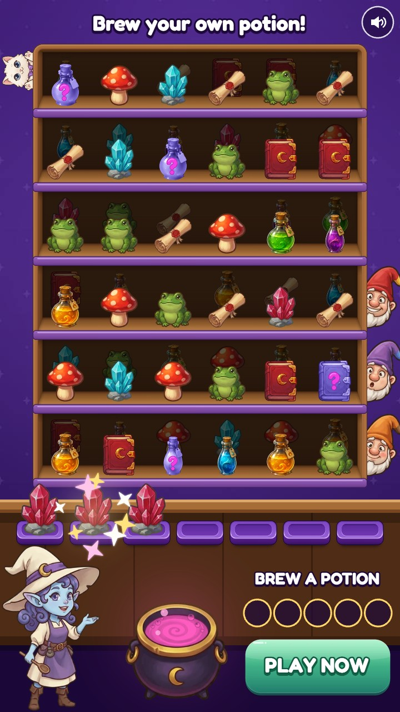
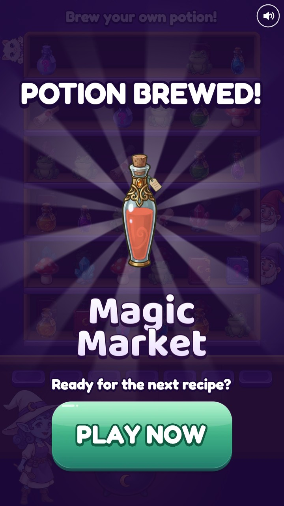

Magic Market is a match-3 game I'm making in Unity. I built a small system that makes its playable ads. AI agents look at other games' ads, come up with new ad ideas and build each one as a little game. Code checks everything that can be measured: file size, layout, and that the ad can actually be won.
You can play every ad in the phone. Pick one from the list under it; the new ones the agents made come first.
Pick an ad to play. Tap a name and it loads in the phone.
Open it full screen · sound starts on your first tap
Nothing an agent makes is used until a check in code passes. I play everything myself, throw out what I don't like and send the rest back with notes.
| Step | Who | What happens | What stops a bad result |
|---|---|---|---|
| 1 Look at the market | AI | Reads other games' ads and writes a short note on each, using a fixed list of words. | Code does the counting, so "most ads do X" is a count, not the agent's opinion. |
| 2 Write tests | AI | Turns what it saw into tests for my ad. Each test asks one question and changes one thing. | Rejected if it changes two things, repeats an old test or makes a claim the game can't back. |
| 3 New ad ideas | AI | One agent writes ideas for new ads and can ask for new art. Other agents build each idea as a small game. | An idea has to point to the ads it came from. A game has to build for every network, be won by following the hand, not be won by random tapping, and fit the screen. |
| 4 Build and check | Code | Builds every ad for four networks, plays each one 3,000 times with bots, and takes stills and a video. | 15 or 21 or 22 checks per ad. If a file is too big for a network, the build fails. |
| 5 Look at it | AI | Opens every picture and asks: does it read, is it true, and can you see the thing the test changes? | A review only counts for the exact file it looked at. Only ads that pass go into the upload folder. |
| 6 Read the results | Code, then AI | Code decides each test with fixed rules. The agent explains the result and suggests what to test next. | Its reading has to agree with the code's. |
The agents run in Claude Code; their instructions are in .claude/agents/. No ad has run on a network yet, so step 6 has only been tried with numbers I made up.
One agent read notes on 25 ads from other match games and wrote ideas for new ones. Other agents built each idea as a small game, from scratch. Some ideas needed new art, which was painted with Figma's image model. I played every ad, threw out the ones I didn't like, and sent some back for another pass. All of them can be played in the phone above.
“Stop the potion thieves!”
Masked gnomes drop through the skylight to steal potions. Tap them before they get away.
Won in 12.9 s by someone who follows the hand · reviewer: PASS
The Township ad 1357796043000700 opens on pressure at a shop counter caused by little characters (an angry queue) and the Gardenscapes ad 1353141253558181 makes the game's own characters actors in a scene with a problem in the first second; the Tile Journey ad 1609378840598104 opens on a night-time drama before any board. AppGrowing reads 'character pressure' and 'failed moments' as first-three-second hooks in puzzle ads, and its Royal Match analysis says to keep the role (someone the viewer must stop or save) with your own characters; the owner liked the grumpy gnomes, so here they are the villains. A gnome sliding down a rope and shushing the viewer is something happening at frame 0, and the one verb (tap the thief) is graspable at once, as Segwise says a playable must be.
Based on: a Township Mobile ad, a Gardenscapes ad, a Tile Journey - Matching Puzzle App ad, appgrowing.net, appgrowing.net, segwise.ai, mdm.co
“Find them in the dark!”
The candles blow out and the village goes dark. Your finger is a lantern: find what is hiding.
Won in 16.5 s by someone who follows the hand · reviewer: PASS
The Match Factory ad 2120020998587567 is the closest thing in the research to our world and the owner's chosen reference: a whole painted purple witch's village at night, seen from above, things to find tucked into it, and a dimmed screen before the tap; here the dimming becomes the play, and the painting is a scene rather than props on a wall. The hidden-object ads 4102418863382110 ('FIND IT IF YOU CAN', a crowded painted picture) and 1530226415798545 (a busy isometric town searched with a finger) show the genre selling search in a painted picture, and searching with a lantern is one verb that is graspable at once, as Segwise says a playable must be. MDM argues unusual concepts are how algorithmic platforms find audiences; Segwise warns that ads with a play the game lacks carry a risk, so this one says it does not show the game.
Based on: a Match Factory ad, a Triple Match 3D ad, a Triple Match City: Tile Puzzle Game ad, segwise.ai, mdm.co, segwise.ai
“Serve the grumpy gnomes!”
Grumpy gnomes shout their orders at the counter. Match three of what each one wants.
Won in 12.72 s by someone who follows the hand · reviewer: PASS
The Township ad 1357796043000700 opens on a pressure moment and not a board: a crowd queuing at a counter turns angry, red faces and a speech bubble asking for three eggs; Gardenscapes 1353141253558181 turns the game's own characters into actors with a problem in the first second. AppGrowing reads 'character pressure' as a first-three-second hook in puzzle ads, and its Royal Match analysis says to keep the role (someone who needs the viewer) with your own character, not to copy theirs. Unlike the subtitled streamer of 1530226415798545, the one who speaks here is a gnome of the shop, speaking as himself; and what the viewer plays is the game's own cabinet, depth and tray.
Based on: a Township Mobile ad, a Gardenscapes ad, a Triple Match City: Tile Puzzle Game ad, appgrowing.net, appgrowing.net
“I can't get the cat out!”
The shop cat is locked behind golden bars. Clear the whole cabinet to set it free.
Won in 15.85 s by someone who follows the hand · reviewer: PASS
Royal Match's ads open on a character in danger and only then show a solvable board, and the wider market runs fail-first and rescue hooks that none of our 13 genre ads uses (only one of them is tense). The first frame borrows the helpless first-person line of 906802798922176 ('I can't find the right place for burger') and the drama-before-play of 1609378840598104, but with a character the shop already has, so what the viewer then plays is the game's own tray and depth rule.
Based on: a Triple Match City: Tile Puzzle Game ad, a Tile Journey - Matching Puzzle App ad, appgrowing.net, appgrowing.net, segwise.ai
“Wrong pick = toad!”
A gnome orders a potion. Pick the wrong ingredient and he turns into a toad.
Won in 7.63 s by someone who follows the hand · reviewer: PASS
Choice playables, where the viewer picks the good or the bad outcome, came back in late 2025, and Royal Match ends its peril ads on 'Pick or Try Again'. Two of our 13 'match' ads (1419301390120911, 906802798922176) open on a different little puzzle altogether; the gnome-to-toad joke is absurd enough to stop a thumb, and it uses the game's own objects as a recipe, which the game never does.
Based on: a Triple Match 3D ad, a Triple Match City: Tile Puzzle Game ad, lancaric.substack.com, appgrowing.net, mdm.co
“It clears itself... almost”
The cabinet starts clearing itself, then stops and hands the rest to you.
Won in 16.4 s by someone who follows the hand · reviewer: PASS
Ad 879280074426551 clears sets with no hand at all and 368730629097956 clears them in a golden burst; Screwdom's top playables are all gameplay and most cut off mid-play, and sort-game ads open on a half-done level whose first moves come by themselves. Satisfying loops are a named 2025 trend; here the satisfaction is shown first and handed over the moment it stops, and everything the viewer plays is the game's own rule, ending on the potion the game really brews.
Based on: a Goods Sort Match ad, a Goods Sort ad, segwise.ai, playturbo.com, lancaric.substack.com, segwise.ai
“It's boiling over!”
The cauldron is boiling over. Pop the bubbles and match three to calm it down.
Won in 18.28 s by someone who follows the hand · reviewer: PASS
The glossy balloon ad 790321796872730 and the branded-balloon ad 9463594760372063 both open on big round glossy things already moving (a pile still filling, a tower turning) with a tray waiting above or beside it, and the Dream Family board 1534163700944112 opens on bursts with no hand at all: motion in the first frame, not a still shelf. AppGrowing reads 'character pressure' as one of the first-three-second hooks of puzzle ads, Segwise says a playable must be graspable in three seconds with one verb, and satisfying loops (popping, bursting) are a named 2025 trend; here the pressure is the witch's own pot and the one verb is pop.
Based on: a Balloon Triple Match Online ad, a Goods Sort ad, a Dream Family - Match 3 Games ad, appgrowing.net, segwise.ai, lancaric.substack.com
These videos are the ads playing themselves. Code recorded them; nobody filmed a screen.
I collected 25 of the most-shown ads from match games in Meta's Ad Library. An agent wrote a note on each one, and code counted the notes.
How they open: full-board 13 of 25, challenge-text 4 of 25, person-or-story 4 of 25. What their words promise: brain 6 of 25, relax 6 of 25, challenge 4 of 25, offline 4 of 25. Two of the most common promises, brain training and playing offline, are ones my ad can't make honestly, and the agent left them out without being told.
A reviewer that passes everything is useless. So I hid six problems in ten ads and gave all ten to the reviewer without telling it. It caught 6 of 6 and passed 4 of 4 of the clean ones.
| Case | What I hid | Should say | Said | Right | Its reason |
|---|---|---|---|---|---|
| clean-7x7 | nothing | PASS | PASS | yes | Headline 'Brew your own potion!' matches the manifest in all nine stills; colour is the royal purple; shelves, tray, cauldron and PLAY NOW are on screen and uncovered in all stills. |
| clean-orange-cat | nothing | PASS | PASS | yes | Boards are identical to the control apart from the cat; headline 'Brew your own potion!' matches the manifest. |
| headline-gone | the headline is painted over in every picture | REVISE | REVISE | yes | The manifest headline 'The tray is almost full!' is not on screen in any hook or set still (9x16, 1x1, 191x100): the top band above the cabinet is empty purple. |
| wrong-words | the settings say one headline; the pictures show another | REVISE | REVISE | yes | The headline in the pictures is 'Brew your own potion!' but the manifest (and tags) say 'Relax and brew a potion': hook-9x16, hook-1x1, hook-191x100 and the set and end stills all show the … |
| button-covered | the store button is painted over in every picture | REVISE | REVISE | yes | A flat brown rectangle covers the PLAY NOW button in every hook and set still (hook-9x16, set-9x16, hook-1x1, set-1x1, hook-191x100, set-191x100): only a sliver of the green button shows at … |
| clean-sunset | nothing | PASS | PASS | yes | Headline in the pictures ('The tray is almost full!') matches the manifest; it fits and is legible in all sizes. |
| wrong-colour | the settings say emerald; the pictures are the purple control's | REVISE | REVISE | yes | The manifest says theme 'emerald' (tag theme=emerald), but every still, at 9x16, 1x1 and 191x100, is the game's purple, identical in colour to relax-royal. |
| cut-off | the 9:16 pictures are shifted so the cabinet's right side is cut off | REVISE | REVISE | yes | All three 9x16 stills (hook, set, end) are broken: the picture is shifted right with a black bar over the left ~158 px, and the right side is cropped. |
| clean-emerald | nothing | PASS | PASS | yes | Headline 'Brew your own potion!' matches the manifest, whole and legible on the green at all sizes. |
| false-promise | the headline promises matching four; the game matches three | REVISE | REVISE | yes | The headline in every hook, set and end still reads 'Match 4 to brew a potion!'. The game is a triple match ('Three alike in the tray leave it', briefs/README.md) and the set stills show … |
My first project, for a word game, made it cheap to make many versions of an ad. But if two versions differ in three things and one does better, you still don't know why.
So here every test changes exactly one thing. I write the question and name what stays the same, and the system writes the versions. If a version differs in two things, it is refused.
A friend who is a 2D artist played the ad and said the objects were too small on a phone. That became a test.
{
"kind": "iteration",
"question": "Does the 7x7 cabinet, fuller but with smaller objects, do better than the 6x6?",
"control": "relax-royal",
"field": "board",
"values": [
"7x7"
],
"read": "ipm",
"min_impressions": 5000,
"min_lift": 0.1
}


Only the cabinet is different, so any difference in results comes from the cabinet. The test started with 8×8; after playing it I dropped the 8×8 and made 6×6 the control.
I wrote most of them. The agent wrote three from what it saw in other ads. None has run on a network yet.
Control: a calm, full cabinet
Against it: a tray that is almost full
Decided by: installs per thousand shown
Control: 6×6
Against it: 7×7
Decided by: installs per thousand shown
Control: white cat
Against it: orange cat
Decided by: share who touch the ad
Control: “Brew your own potion!”
Against it: “Match 3 to brew a potion!”, “Relax and brew a potion”
Decided by: share who touch the ad
Control: the game's purple
Against it: emerald
Decided by: installs per thousand shown
Control: the game's purple
Against it: sunset
Decided by: installs per thousand shown
Control: “Can you save the tray?”
Against it: “Where's the third potion?”
Decided by: share who touch the ad
Rests on: ad 2176, ad 0911, ad 7956, 01-opening, 04-headline
Control: “Brew your own potion!”
Against it: “No timer. Just match 3.”
Decided by: share who touch the ad
Rests on: ad 7532, ad 6334, ad 6551, 04-headline
Control: after 2.0 s
Against it: after 1.5 s
Decided by: share who reach the end card
Rests on: ad 6334, ad 7956, ad 7532, ad 8795, 02-board-size
One command builds every version. 18 versions take about 5 min. Each one gets:
Every file is named after its parts, so a network's report can be traced back to its test.


A network's report goes in as a spreadsheet. A version only wins if all three of these are true.
At least 5,000 views on each side. Before that, the test isn't read at all.
At least 10% better than the control on what the test is about.
A difference bigger than chance would give 19 times out of 20.
To try this step anyway, I made up a week of numbers (in rehearsal/, marked as made up everywhere). The agent read them correctly and suggested two next tests. That shows the loop works; it says nothing about how my ads would really do.
Once in Python, where levels are built, and once in JavaScript, where the ad runs. Tests play 200 random games through both and compare every tap.
One taps at random, one picks what matches, one follows the hand. 1,000 games each.
A test checks that every object sits inside its shelf on three phone shapes. I added it after bottles that looked fine to me were poking through the shelf above.
A test taps exactly where the helping hand's finger ends, in every ad and on three screens, and checks the ad takes what the hand meant.
| How often a bot wins when it… | 6×6 | 7×7 | Can you save the tray? |
|---|---|---|---|
| follows the hand | 100% | 100% | 100% |
| takes whatever matches the tray | 99% | 100% | 100% |
| taps at random | 0% | 0% | 12% |